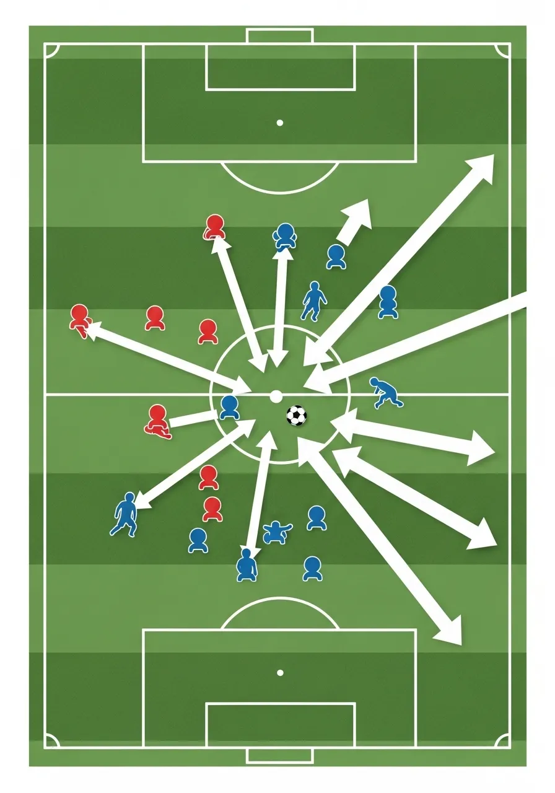
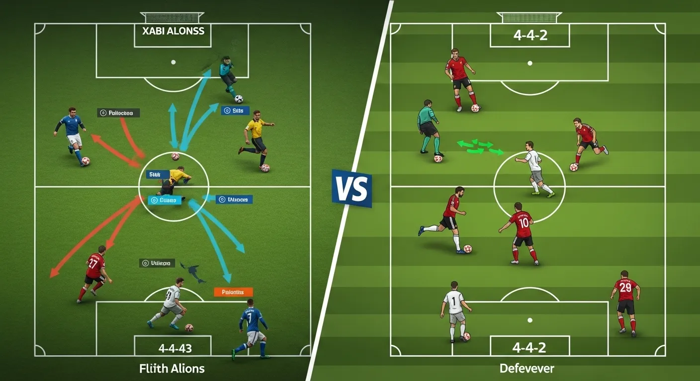
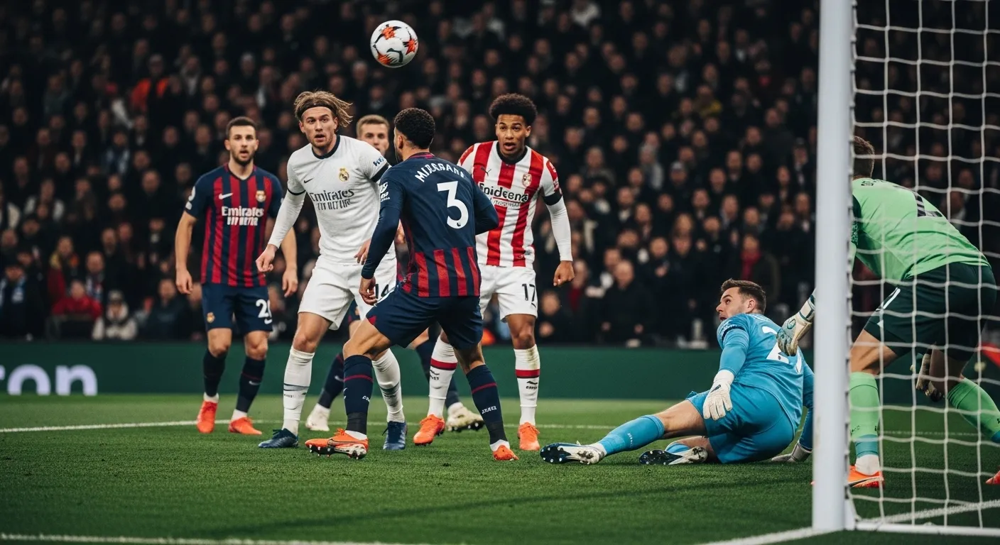

- Философия Футбола Хаби Алонсо: Больше, Чем Просто Тактика
- Основные Тактические Схемы и Их Вариации
- Прессинг и Контрпрессинг в Тактике Алонсо
- Атакующая Фаза: От Контроля до Вертикальности
- Ключевые Игроки и Их Роль в Системе Алонсо
- Адаптация Тактики и Анализ Его Методов
- Последние Новости и Будущее Карьеры Алонсо
- Часто Задаваемые Вопросы о Хаби Алонсо
- Заключение: Гений Алонсо и Его Наследие
Философия Футбола Хаби Алонсо: Больше, Чем Просто Тактика
В мире футбола 2026 года имя Хаби Алонсо вызывает восхищение и уважение. Период его работы с леверкузенским «Байером» стал образцом тактического мастерства и глубокого понимания игры. Тактика, которую Алонсо развил в «Байере», — это не просто набор схем, а целая футбольная философия, которая превратила команду в одного из главных триумфаторов.
Алонсо, будучи выдающимся полузащитником, игравшим под руководством таких мэтров, как Пеп Гвардиола, Жозе Моуринью и Карло Анчелотти, впитал в себя лучшие идеи современного футбола. Его тренерский стиль — это синтез позиционного контроля, агрессивного прессинга и молниеносных вертикальных атак.
Влияние Игровой Карьеры на Тренерский Стиль
Опыт Алонсо как игрока среднего звена, который диктовал темп игры и читал ее на несколько ходов вперед, является фундаментом его тренерского подхода. Он понимает важность каждой позиции на поле и умеет донести это до своих подопечных. Это позволяет ему строить команды, где каждый игрок не просто выполняет свою роль, но и является частью сложного, но гармоничного механизма.
Принципы Позиционной Игры и Доминирования
Центральным элементом философии Алонсо является контроль над мячом и пространством. Его команды стремятся доминировать, не только владея мячом, но и занимая ключевые зоны на поле, что позволяет им контролировать ход матча. Это достигается за счет умного движения игроков, постоянного поиска свободных зон и точных передач, разрушающих оборону соперника.

Основные Тактические Схемы и Их Вариации
Одной из отличительных черт тренерской работы Хаби Алонсо является тактическая гибкость. Хотя созданная им система в «Байере» чаще всего ассоциируется с схемами 3-4-3 или 3-4-2-1, он умел быстро адаптировать свои построения в зависимости от соперника и ситуации на поле.
Гибкость 3-4-3 и 3-4-2-1: Адаптация к Сопернику
Схема с тремя центральными защитниками позволяет «Байеру» иметь численное превосходство в центре поля и эффективно использовать ширину атаки. В зависимости от фазы игры, эти схемы могут трансформироваться, обеспечивая как надежную оборону, так и мощное наступление. Например, 3-4-2-1 с двумя атакующими полузащитниками за нападающим создает дополнительные опции для проникновения в штрафную.
Роль Вингеров и Латералей в Создании Ширины
В системе Алонсо вингеры и латерали играют ключевую роль. Они не просто создают ширину, но и активно участвуют в прессинге, обеспечивают поддержку в атаке и обороне, а также совершают забегания за спину защитникам. Их выносливость и тактическая дисциплина являются жизненно важными для функционирования всей системы.
Прессинг и Контрпрессинг в Тактике Алонсо
Интенсивный прессинг и быстрый контрпрессинг — визитная карточка системы Алонсо в «Байере». Это не хаотичное давление, а тщательно отработанная тактика, направленная на быстрое возвращение мяча и создание голевых моментов.
Интенсивность и Координация Высокого Прессинга
В системе Алонсо команда начинает прессинговать высоко, часто уже на половине поля соперника. Это требует идеальной координации между игроками, которые должны двигаться как единое целое, перекрывая линии передач и загоняя соперника в неудобные зоны. Цель — заставить оппонента ошибиться и отобрать мяч как можно ближе к чужим воротам.
Ловушки для Соперника и Быстрый Возврат Мяча
«Байер» умело создает так называемые «ловушки прессинга», когда сопернику специально оставляется кажущаяся свободная зона, куда он загоняется, а затем подвергается коллективному отбору. После потери мяча команда мгновенно переходит в контрпрессинг, стараясь вернуть владение в первые несколько секунд, не давая сопернику организовать свою атаку.
Атакующая Фаза: От Контроля до Вертикальности
Несмотря на акцент на контроле, атакующая тактика, которую Алонсо развил в «Байере», не является медленной или стерильной. Напротив, она отличается динамизмом и нацеленностью на ворота.
Создание Численного Превосходства в Атаке
В фазе атаки в системе Алонсо часто создается численное превосходство в ключевых зонах, особенно на флангах и в полуфлангах. Это достигается за счет подключения латералей, смещения инсайдов и умных забеганий полузащитников. Такой подход позволяет вскрывать оборону соперника и создавать пространство для ударов или опасных передач.
Быстрые Переходы и Завершение Атак
После отбора мяча или при перехвате, игроки в системе Алонсо стремятся максимально быстро доставлять мяч в атакующую треть поля. Это позволяет использовать дезорганизацию в обороне соперника. Завершение атак часто происходит благодаря точным ударам из-за пределов штрафной или комбинациям, выводящим игроков на ударную позицию в пределах вратарской.

Ключевые Игроки и Их Роль в Системе Алонсо
Успех любой тактики зависит от ее исполнителей. В период работы Алонсо в «Байере» каждый игрок четко понимал свою роль, что позволяло системе функционировать безупречно.
Центр Поля: Мозг Команды и Распределение Пасов
Центральные полузащитники являются сердцем команды. Они отвечают за распределение мяча, диктуют темп игры, участвуют в прессинге и поддерживают атаки. Их умение читать игру, точно пасовать и выигрывать единоборства критически важно для контроля над центром поля.
Защита: Основа Надежности и Начало Атак
Три центральных защитника не только обеспечивают надежность у своих ворот, но и играют ключевую роль в начале атак. Их умение продвигать мяч вперед, делать точные первые пасы и сохранять спокойствие под давлением соперника позволяет команде эффективно выходить из обороны в атаку.
Нападение: Острота и Реализация Моментов
Нападающие и атакующие полузащитники отвечают за остроту в атаке и реализацию голевых моментов. Их скорость, дриблинг, умение открываться и завершать атаки делают команду опасной для любого соперника. Они постоянно оказывают давление на защитников, не давая им расслабиться.
Адаптация Тактики и Анализ Его Методов
Хаби Алонсо не просто придерживается одной тактической догмы; он постоянно анализирует и адаптирует тактические построения к вызовам, с которыми сталкивается его команда.
Анализ Соперников и Корректировки По Ходу Матча
Каждый матч для Алонсо в «Байере» становился новой головоломкой. Он тщательно изучал соперников, их сильные и слабые стороны, и на основе этого выстраивал план на игру. Более того, он был способен вносить оперативные корректировки по ходу матча, меняя схемы, позиции игроков или интенсивность прессинга.
Менталитет Победителя и Устойчивость к Давлению
Помимо тактических схем, Алонсо прививает своим игрокам менталитет победителя. Он учит их не сдаваться, верить в свои силы и сохранять спокойствие под давлением. Эта психологическая устойчивость являлась одним из важнейших факторов успеха его команды, позволяя выигрывать даже самые сложные матчи.
Последние Новости и Будущее Карьеры Алонсо
Период работы «Байера» под руководством Хаби Алонсо стал одним из самых ярких явлений в мировом футболе. Его тактические инновации привлекают внимание спортивного сообщества и в 2026 году.
Перспективы Развития и Новые Вызовы
Впереди у Алонсо новые вызовы и возможные изменения в карьере в 2026 году. Сохранить высокий уровень результатов и продолжать развивать футбольную философию Алонсо на новом месте — задача не из легких. Слухи связывают его с ведущими европейскими клубами, что делает последние новости о его будущем одной из главных тем обсуждения.
Влияние на Мировой Футбол и Тренерское Сообщество
Футбольная философия Алонсо и тактика, которую он развил в «Байере», продолжают оказывать значительное влияние на мировой футбол. В 2026 году многие тренеры изучают его методы. Будучи одним из самых востребованных специалистов, Алонсо регулярно упоминается в новостях о возможных переходах в топ-клубы Европы. Его тренерский путь только начинается, но его наследие уже очевидно.

Часто Задаваемые Вопросы о Хаби Алонсо
Какие основные тактические схемы использовал Хаби Алонсо в 'Байере'?
В период работы с «Байером» Хаби Алонсо чаще всего использовал гибкие схемы с тремя центральными защитниками, такие как 3-4-3 или 3-4-2-1, позволявшие команде адаптироваться к различным соперникам.
В чем заключается уникальность прессинга в системе Хаби Алонсо?
Уникальность прессинга в тактике, которую Алонсо развил в «Байере», заключается в его высокой интенсивности, координации игроков и умении создавать «ловушки» для быстрого возврата владения.
Как Хаби Алонсо адаптирует свою тактику и почему его методы обсуждают в 2026 году?
В 2026 году методы Алонсо остаются в центре внимания благодаря его гибкости: он тщательно анализирует соперников, перестраивает схемы и вносит корректировки по ходу матчей.
Какова роль центральных защитников в футбольной философии Алонсо?
В его философии центральные защитники не только обороняются, но и начинают атаки, продвигая мяч вперед точными первыми передачами.
Какие игроки были ключевыми в тактических схемах Алонсо в «Байере»?
Ключевую роль играли универсальные латерали и динамичные полузащитники, способные выполнять несколько функций и быстро принимать решения на поле.
Заключение: Гений Алонсо и Его Наследие
Футбольная философия Алонсо и его наработки в «Байере» — это пример современного, интеллектуального футбола, где каждый элемент продуман до мелочей. Его способность сочетать жесткую дисциплину с творческой свободой делает его одним из самых ярких тренеров нового поколения. Именно поэтому его методы так активно обсуждают в 2026 году, а последние новости о его карьере привлекают миллионы болельщиков по всему миру.
Раскрытие информации: Некоторые ссылки на этой странице могут быть партнерскими. Это означает, что мы можем получить комиссию, если вы перейдете по ссылке и выполните целевое действие. Для вас это ничего не меняет и помогает нам поддерживать проект.